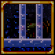
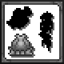

Torch Friend Plus is a pretty simple mod. It's an addon to Torch Friend and allows you to use even more blocks to craft into torches, along with a "discount" feature that allows you to use slightly less blocks if you have more blocks.

Boss Biome Anywhere allows you to summon and fight the EoC and BoC anywhere. It doesn't support Duke Fishron and fighting Plantera on the surface will still cause it to enrage (ANYWHERE underground should be fine, though).